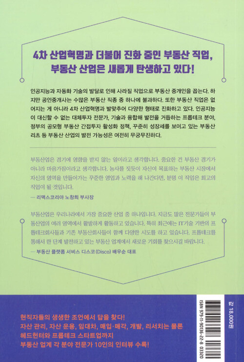

식사에도 과학이 필요해
과학 논문에서 찾아낸 내 몸을 지키는 식사법
린칭순 지음 / 양성희 옮김


2020.06.03. 출간 / 320쪽 / 142*210mm / 무선 / 실용, 건강
잘못된 건강 지식이 내 몸을 망친다!
200여 편의 과학 논문에서 찾아낸 올바른 건강 지식
‘기적’, ‘혁명’, ‘완벽한’, ‘최강의’, ‘우리가 몰랐던’, ‘내 몸을 살리는’. 건강 관련 지식에는 온갖 수식어가 붙는다. 비타민, 효소, 오메가3, 항산화제, 유익균… 몸에 좋다는 기적의 성분은 어찌 이리도 많은지! 케토제닉 다이어트, 거슨 요법, 간헐적 단식 등 소위 최강의 비법도 넘쳐난다. 암과 알츠하이머를 비롯한 각종 질병을 착착 고쳐 줄 뿐만 아니라, 심지어 노화까지 막아 준다고 한다. 그렇다면 이들 주장은 무엇을 바탕으로 하는 걸까? 확실한 근거는 있을까? 40년 이상 의학계에서 연구 활동에 전념한 린칭순 박사는 과학 학술지에 발표된 논문에서 그 답을 찾는다. [뉴잉글랜드 의학 저널(New England Journal of Medicine)]을 포함한 60여 개 의학 학술지에서 논문을 심사해 온 과학자의 날카로운 감식안으로 무엇이 우리의 건강을 돕고 어떤 것이 우리의 건강을 해치는지를 낱낱이 밝혀낸다.
저자는 이 세상에 무병장수하게 해 주는 식품이나 영양소는 존재하지 않는다고 단언한다. 인터넷상에, 혹은 서점가에 떠도는 온갖 미사여구가 붙은 건강 정보는 상술이 발현된 것일 가능성이 높다. 잘못된 건강 지식은 내 몸을 망친다. 내 몸을 지키기 위해서라도 건강 지식은 과학적으로 꼼꼼히 따져볼 필요가 있다. 몸에 좋다고 믿어 왔던 상식의 근거를 파헤치는 저자의 글을 따라가다 보면 건강 지식의 진실을 꿰뚫어 보는 능력을 얻게 될 것이다.